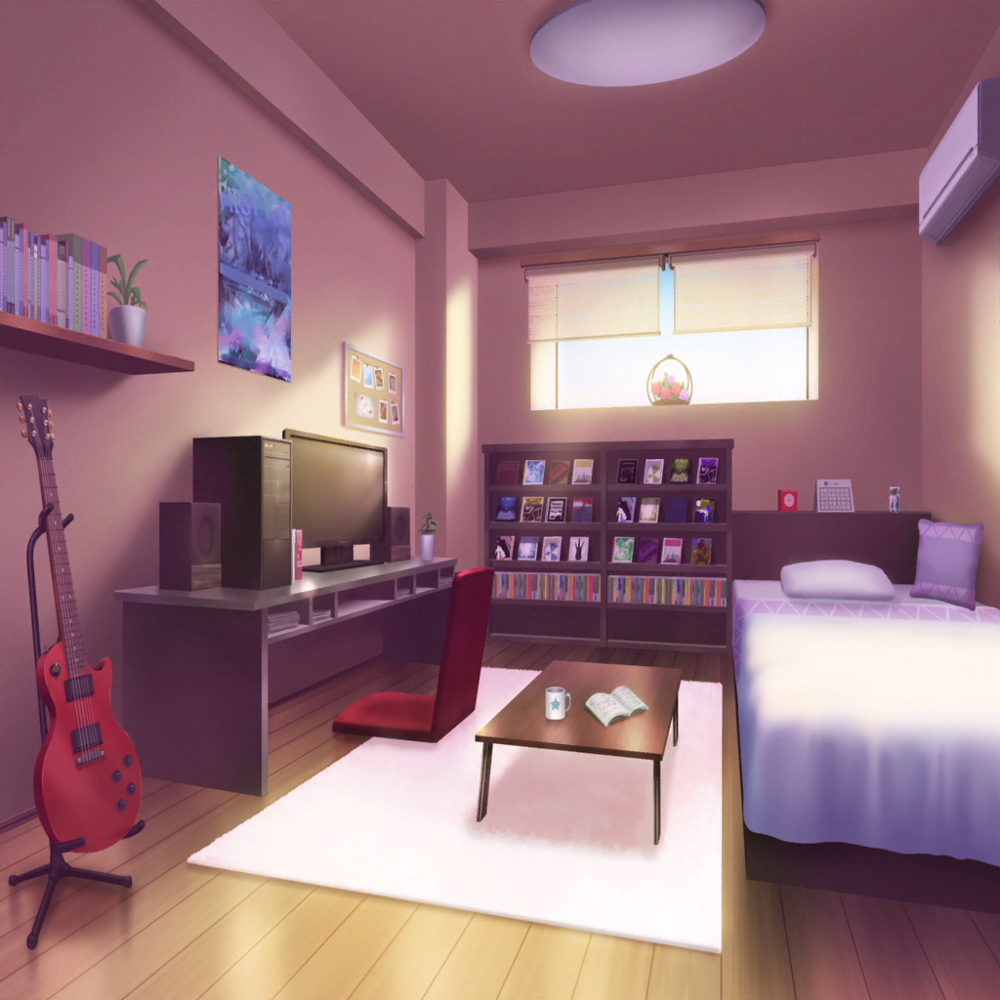

数時間後
美竹家 蘭の部屋
ひまり
――じゃあ、ここのベースラインは……
つぐみ
うんっ、よさそう
蘭
ん……
モカ
蘭、おはよ〜
蘭
あれ……うわ、もうお昼じゃん……
巴
歌詞、見たよ！ めちゃくちゃいいな、これ！！
ひまり
朝日からはじまって、夕焼け、夜空って続いていって……
私達の新しい『いつも通り』が詰まってるって感じがする！
つぐみ
そう思ったら、早くアレンジを考えたくなっちゃって。
みんなで話しあってたんだ
蘭
そうだったんだ。
よかった……歌詞、みんなと一緒に演奏できるものが作れて
巴
ライブに向けて、新曲も間に合いそうでよかったよ。
いいライブにしような！
ひまり
うんっ、そうだね！

数日後
ライブ本番
CiRCLE 楽屋
ひまり
もうすぐで私達の出番だよね？
んー、楽しみっ！
巴
まだ出演枠のあいてる、ちょうどいいライブが
見つかってよかったよな
モカ
そだね。新曲のアレンジも間に合ったし、
今日はモカっちゃう演奏するぞー
蘭
今日のセットリスト、大切な空の色が全部詰まってるね
つぐみ
うんっ。夕焼け、夜空……最後は朝日！
どれも、私達が一緒に見た空だもん
蘭
モカ、いいセットリスト考えたね
モカ
へへー、そうでしょー
スタッフ
そろそろ準備お願いしまーす
ひまり
きたっ！！
蘭
……行こう、みんな

CiRCLE ステージ
蘭
――まずは１曲。
『Scarlet Sky』
蘭
――♪
巴
続けていくぜー！ 『Y.O.L.O!!!!!』
蘭
――ありがとう。
続けて聴いてもらいました
蘭
次、最後は新曲です
蘭
あたし達の空はずっとつながってる。
それが、『いつも通り』だから
蘭
『 ツナグ、ソラモヨウ』

モカ
（やっぱり、五人で一緒にいられることが一番うれしい！
だから、決めたよ。蘭の背中を追いかけていくこと。
後悔しない、あたしが決めた道）
モカ
（この曲が終わったら、夜が明ける。
新しい、『いつも通り』がはじまる。
これからもよろしくね、みんな）
ひまり
（いつも以上に、みんなの息がバッチリなのが分かるっ！
私達、やっと今、同じ空を見てるんだ。
ううっ……なんか泣きそうだよ〜！）
ひまり
（私は今、みんなで見てるこの空を、大切にしたい！
それが、Afterglowのリーダーとしての務めっ！
みんな、これからもずーっと、一緒だよ！！）
巴
（蘭が遠くに行っちゃうこと、歌詞がわからなかったこと……
全部不安だったけど……今は、何も怖くない！
だって……）
巴
（全部の空は夕焼けでつながってる……
そう思えば、不安なんかなにもない。この空がある限り、
アタシ達はずっと一緒だ！）
つぐみ
（バンドをはじめる前からずっと……私はみんなの背中を
見てきた。ずっとずっと追いかけてきた……）
つぐみ
（今日のライブで見えるみんなの背中は、今までで
一番キラキラしてて、かっこいい！ これからも私、
ずっとずっと、みんなの背中、追いかけさせてね！）
蘭
（もっと歌いたい！ もっと、演奏したい！
みんなの音に背中を押されて、あたしは今ここに立ってる）
蘭
（バンドをはじめる前からずっと……あたしは
みんなにいつも背中を押してもらって、助けてもらって……
あたしは、一人じゃ何もできないかもしれない）
蘭
（でも、これからもずっとみんなと一緒にいたいから……
あたしはみんなに背中を押してもらいながら、前に進み続ける。
だから……）
蘭
（あたしの背中を信じて、ついてきて――！）
CiRCLE 楽屋
巴
ふう……っ！
みんな、おつかれ！ 最高のライブだったな！
ひまり
ううっ……うう〜〜！！ 蘭〜〜〜！！
蘭
うわっ！？ ちょ、ひまり！
急に抱きつかないでよ！
ひまり
だってぇ〜……歌ってる蘭、すっごくかっこよくて……
ていうかみんな、ほんとにかっこよくて……
ひまり
私、みんなと幼馴染でよかったなあ〜って……
モカ
ひーちゃん、大げさなんだから〜
つぐみ
でもね、今日の皆の背中、本当にかっこよかったんだよ。
いつもよりずっと！
蘭
ひまりが大げさなのはいつもだけどさ……
あたしも今日、本当にみんなと幼馴染でよかったって思った
蘭
みんながいたから、今のあたしがあるんだって思ったら、
本当に、この五人でずっと一緒にいたいって
思ったっていうか……
蘭
……あ……
モカ
思ったっていうか〜？
蘭
なんでもない！ モカがそうやって茶化すからもう言わない
巴
モカ〜、ダメだろ？
からかうなら最後まで聞いてからにしろよ〜？ あははっ
蘭
うっさいなあ！
ひまり
ふふっ。やっぱりこういう蘭は、ずっと変わらないでほしい！
つぐみ
あはは……私も、ちょっぴりそう思うな
蘭
つぐみまで！？
ホントにもう、みんな……
蘭
最悪だよ、ほんと！